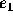
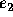
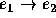
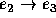
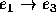
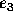
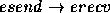
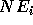
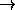

| Identifying Concurrent Events |
It is important in distributed computer systems to identify those events (at identifiable points in time) that are concurrent, or not related to each other in time. A group of concurrent events may sometimes attempt to simultaneously use the same resource, and this could cause problems.
Events that are not concurrent can be ordered in time. For example, if event  can be shown to always precede event  in time, then and are obviously not concurrent. Notationally we indicate that precedes by writing  . Note that the precedes relation is transitive, as expected. Thus if and  , then we can also note that  .
Sequential events in a single computation are not concurrent. For example, if a particular computation performs the operations identified by events , and  in that order, then clearly and .
Computations in a distributed system communicate by sending messages. If event esend corresponds to the sending of a message by one computation, and event erecv corresponds to the reception of that message by a different computation, then we can always note that  , since a message cannot be received before it is sent.
In this problem you will be supplied with lists of sequential events for an arbitrary number of computations, and the identification of an arbitrary number of messages sent between these computations. Your task is to identify those pairs of events that are concurrent.
A number of test cases will be supplied. For each test case the input will include first an integer, NC, specifying the number of computations in the test case. For each of these NC computations there will be a single line containing an integer  that specifies the number of sequential events in the computation followed by event names. Event names will always contain one to five alphanumeric characters, and will be separated from each other by at least one blank. Following the specification of the events in the last computation there will be a line with a single integer, NM, that specifies the number of messages that are sent between computations. Finally, on each of the following NM lines there will be a pair of event names specifying the name of the event associated with the sending of a message, and the event associated with the reception of the message. These names will have previously appeared in the lists of events associated with computations, and will be separated by at least one blank. The last test case will be followed by the single integer 0 on a line by itself.
For each test case, print the test case number (they are numbered sequentially starting with 1), the number of pairs of concurrent events for the test case, and any two pair of the concurrent event names. If there is only one concurrent pair of events, just print it. And if there are no concurrent events, then state that fact.
Consider the following input data:
2 2 e1 e2 2 e3 e4 1 e3 e1 0
There are two computations. In the first e1  e2 and in the second e3 e4. A single message is sent from e3 to e1, which means e3 e1. Using the transitive property of the precedes relation we can additionally determine that e3 e2. This leaves the pairs (e1,e4) and (e2,e4) as concurrent events.
2 2 e1 e2 2 e3 e4 1 e3 e1 3 3 one two three 2 four five 3 six seven eight 2 one four five six 1 3 x y zee 0 2 2 alpha beta 1 gamma 1 gamma beta 0
Case 1, 2 concurrent events: (e1,e4) (e2,e4) Case 2, 10 concurrent events: (two,four) (two,five) Case 3, no concurrent events. Case 4, 1 concurrent events: (alpha,gamma)